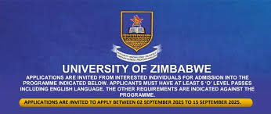

What we offer as the University of Zimbabwe
A Glimpse of what we offer
The University of Zimbabwe's Faculty of Health and Medical sciences offers a wide range of programs and opportunities for students to excel in their chosen fields. Here is a glimpse into what we have to offer.
Undergraduate Programs
- Bachelor of Medicine and Surgery [MBChB]: A comprehensive program that equips students with the knowledge, skills, and attitudes necessary to become competent medical doctors.
- Bachelor of Science in Nursing: A program that prepares students for a rewarding career in nursing, with a focus on evidence-based practice and patient-centered care.
- Bachelor of Pharmacy: A program that teaches students the art and science of pharmacy, with a focus on pharmaceutical care and research.
NB: This is not the exhausted list, there are many more programs not mentioned.
Postgraduate Programs
- Masters in Medicine [MMed]: A program that provides advanced training in various medical specialities, including internal medicine, surgery, pediatrics, and many more.
- Masters in Nursing: A program that equips students with advanced knowledge and skills in nursing practice, education, and research.
- Masters in Pharmacy: A program that focuses on advanced pharmaceutical care, research, and practice.
Student Life
- Supportive learning environment: Our faculty and staff are committed to providing a supportive and inclusive learning environment for all students.
- Student Organisations: We have various student organisations that cater to different interests, including medical, radiography, biomedical engineering as well as pharmacy student associations.
- Extracurricular activities: We offer a range of extracurricular activities, including sports, cultural events, and community service projects.
Career Opportunities
- Clinical placements: We have established partnerships with international universities and organisations, providing students with opportunities for global exposure and collaboration.
- Career guidance: Our faculty and staff provide career guidance and support to help students achieve their career goals.
- Alumni network: Our alumni network provides students with opportunities to connect with graduates who have gone on to successful careers in healthcare.
Global Partnerships
- International collaborations: We have established partnerships with international universities and organisations, providing students with opportunities for global exposure and collaboration.
- Exchange programs: We offer exchange programs that allow students to study abroad and gain new perspective and experiences.
- Research collaborations: We collaborate with international researchers and institutions to address global health challenges.
(be guided by the links below)